pass_009 · NE defense
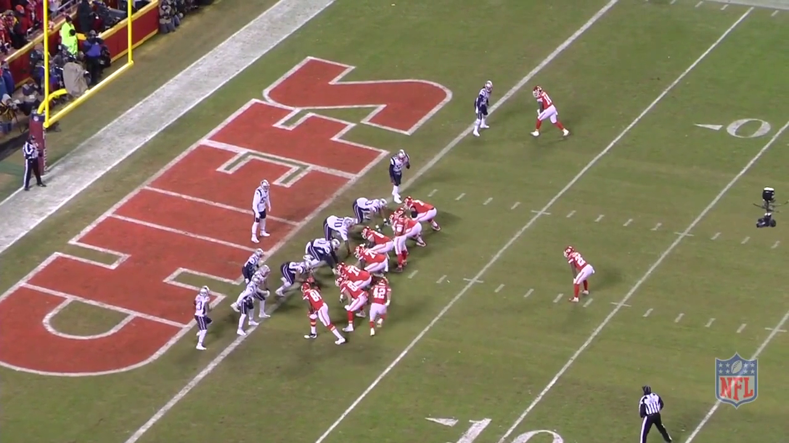
NE white goal-line defense: defenders are crowded near the line or matched to receivers; no clear deep safety. Goal-line example, not a Cover 0 claim.
Frame 150 · 5.005000 s · confidence 0.88 · not human verified15 original 1280 × 720 pre-snap frames. Agent-proposed labels; human verification pending. Unknown examples are held out. No coverage calls or post-snap labels inferred.

NE white goal-line defense: defenders are crowded near the line or matched to receivers; no clear deep safety. Goal-line example, not a Cover 0 claim.
Frame 150 · 5.005000 s · confidence 0.88 · not human verified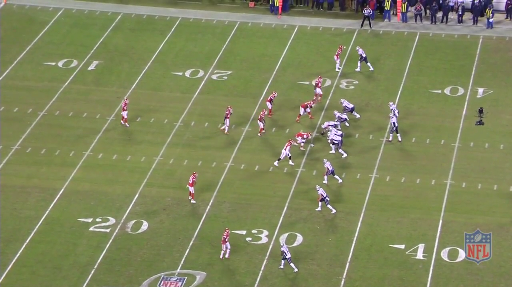
KC red defense: one clearly deepest middle/post defender near the 15; underneath and near-side defenders are substantially shallower.
Frame 150 · 5.005000 s · confidence 0.84 · not human verified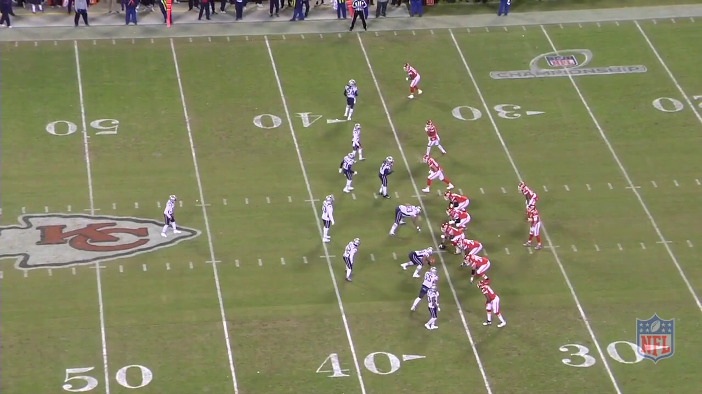
NE white defense: one isolated deep middle defender near midfield; remaining defenders aligned close to the line and receivers.
Frame 150 · 5.005000 s · confidence 0.93 · not human verified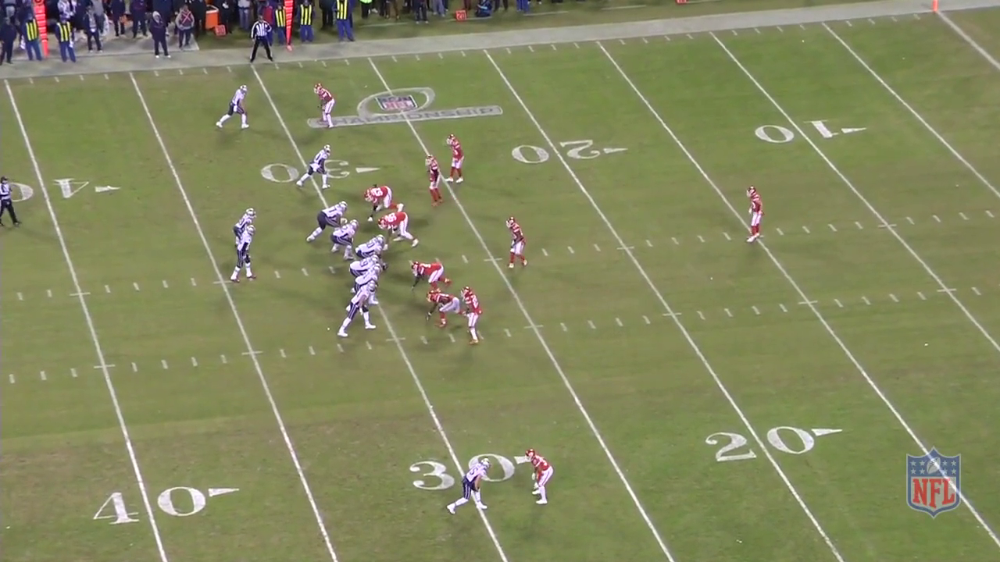
KC red defense: one isolated deep post defender around the 15-17; other defensive backs are close to receivers or the box.
Frame 150 · 5.005000 s · confidence 0.94 · not human verified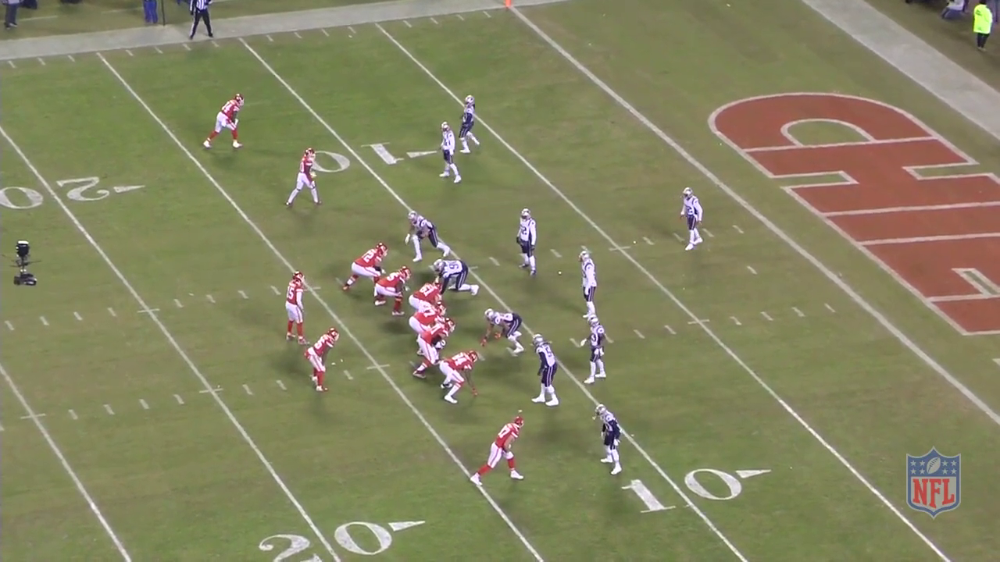
NE white defense: one central defender near the 3-5 stands behind the underneath defenders; red-zone depth is compressed.
Frame 150 · 5.005000 s · confidence 0.85 · not human verified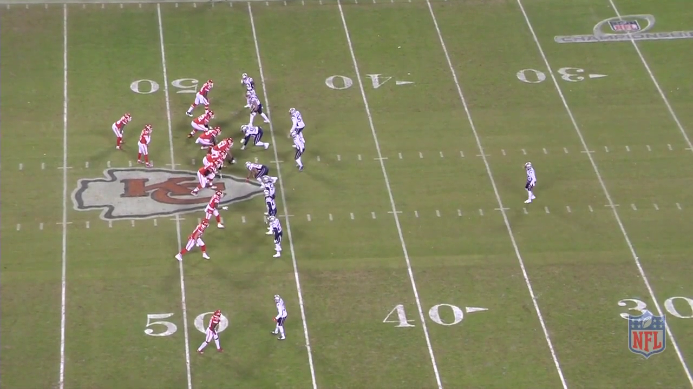
NE white defense: one isolated post defender near the 35; all other defenders remain much closer to the line or receivers.
Frame 150 · 5.005000 s · confidence 0.95 · not human verified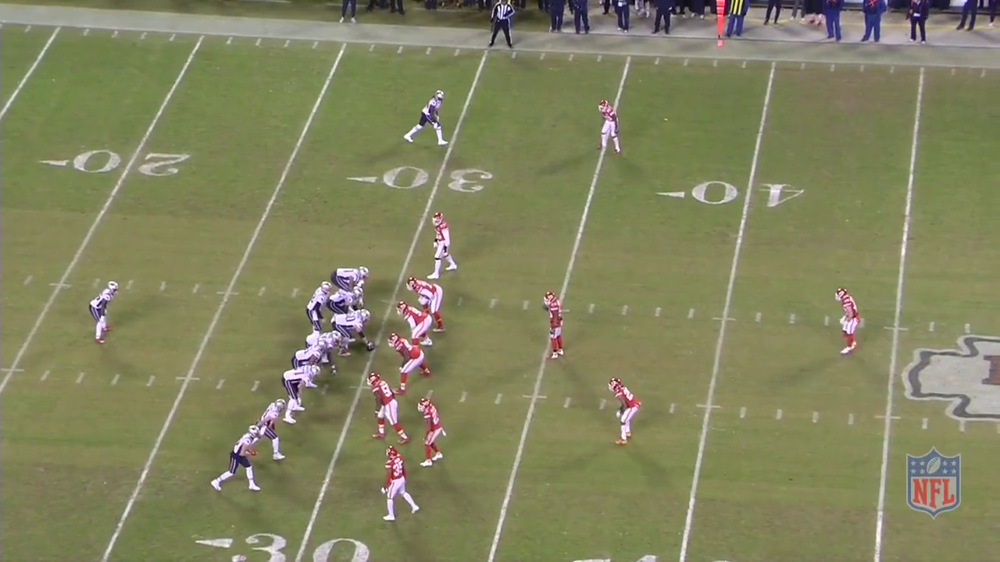
KC red defense: one isolated central deep safety near the 47; near-side underneath defender is much shallower.
Frame 150 · 5.005000 s · confidence 0.92 · not human verified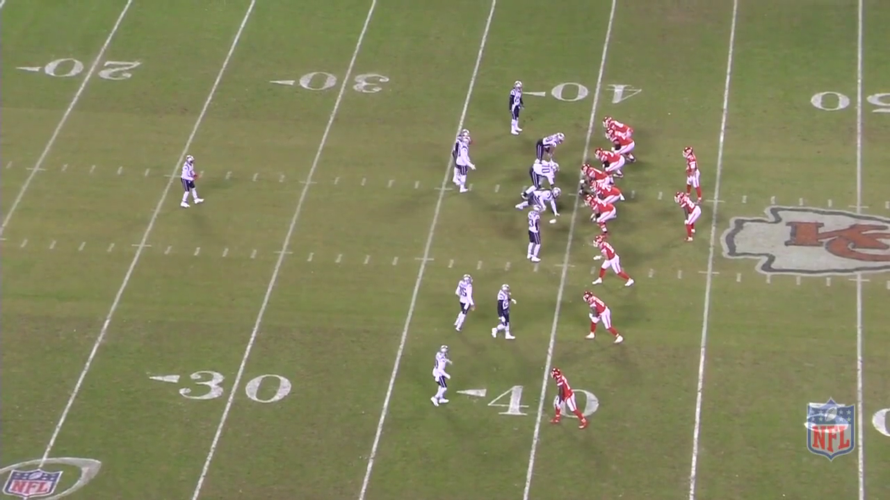
NE white defense: one isolated deep middle defender near the 25; remaining secondary is clustered near the 35-40.
Frame 150 · 5.005000 s · confidence 0.94 · not human verified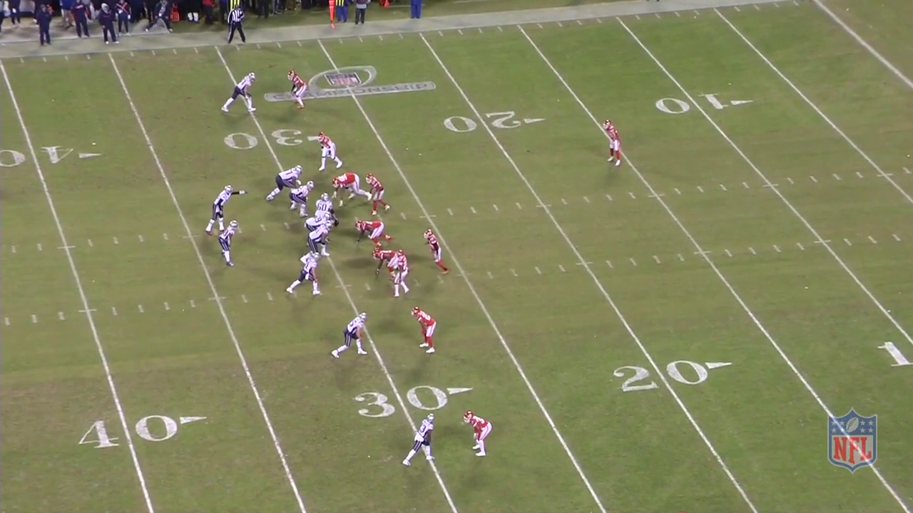
KC red defense: one isolated deep safety around the 15; remaining defensive backs are close to the line and receivers.
Frame 150 · 5.005000 s · confidence 0.94 · not human verified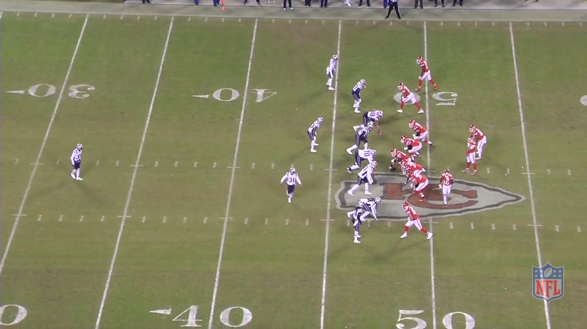
NE white defense: one isolated middle/post defender near the 33; underneath defender number 31 is much closer to the line.
Frame 150 · 5.005000 s · confidence 0.94 · not human verified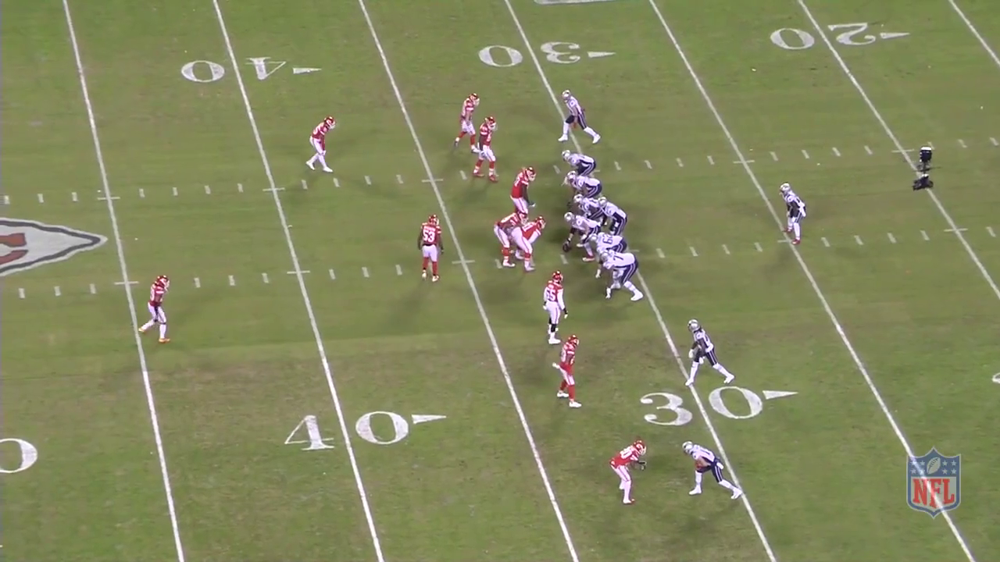
KC red defense: two staggered deep candidates split across the formation; far-side candidate is shallower than near-side candidate. Review staggered depth.
Frame 150 · 5.005000 s · confidence 0.82 · not human verified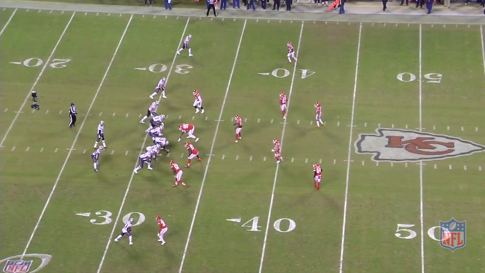
KC red defense: two deep defenders around the 44 split above and below the hashes; distinguish the wide top corner from the safety pair.
Frame 120 · 4.004000 s · confidence 0.9 · not human verified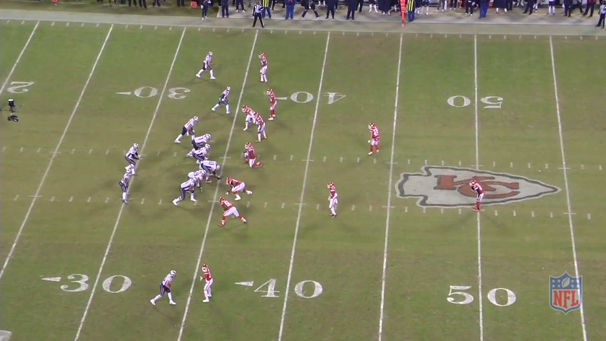
KC red defense: staggered split deep pair, far side around the 43-44 and near side around midfield; an additional underneath defender is shallower. Review staggered depth.
Frame 150 · 5.005000 s · confidence 0.82 · not human verified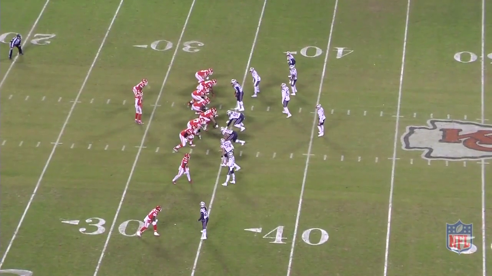
NE white defense: compressed shallow secondary around the 40 with stacked far-side defenders; unclear whether this is one-high or a shallow split structure. Hold out of supervised training pending review.
Frame 150 · 5.005000 s · confidence 0.4 · not human verified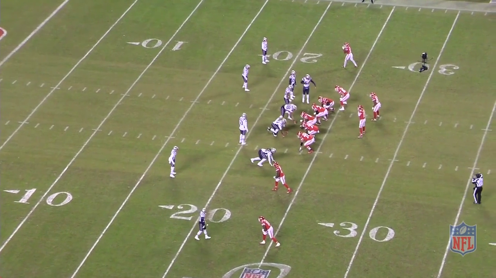
NE white defense: shallow asymmetric safety candidates around the 17-19, with far-side player close to the receiver alignment; cannot reliably distinguish one-high from shallow two-high. Hold out pending review.
Frame 150 · 5.005000 s · confidence 0.42 · not human verified